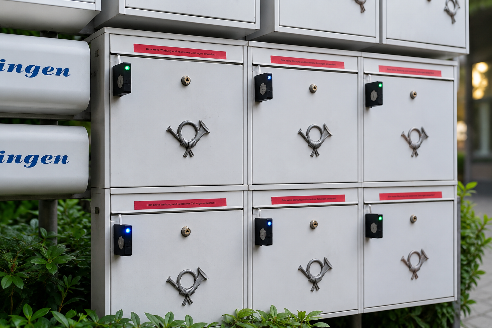
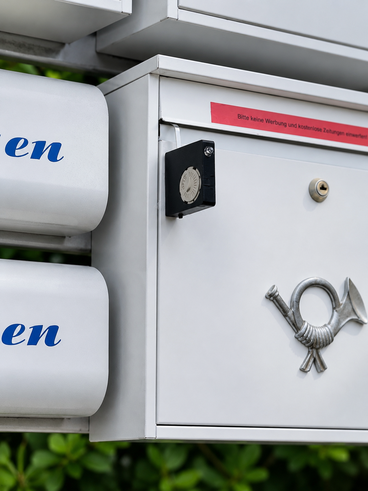
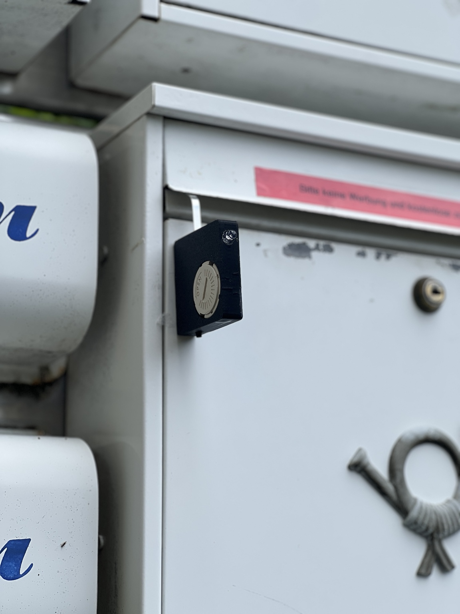
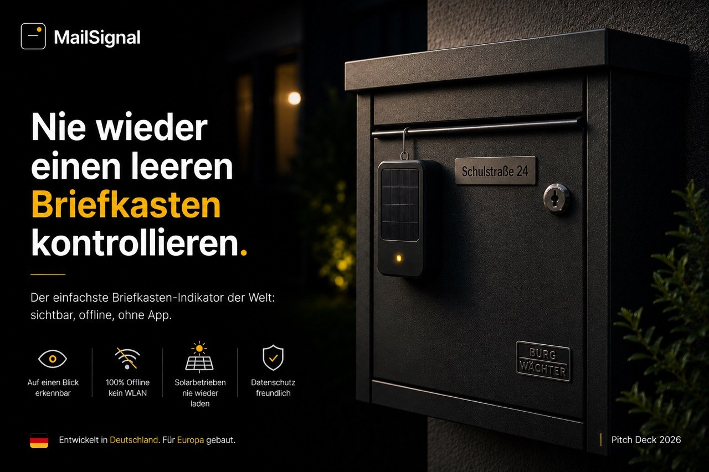
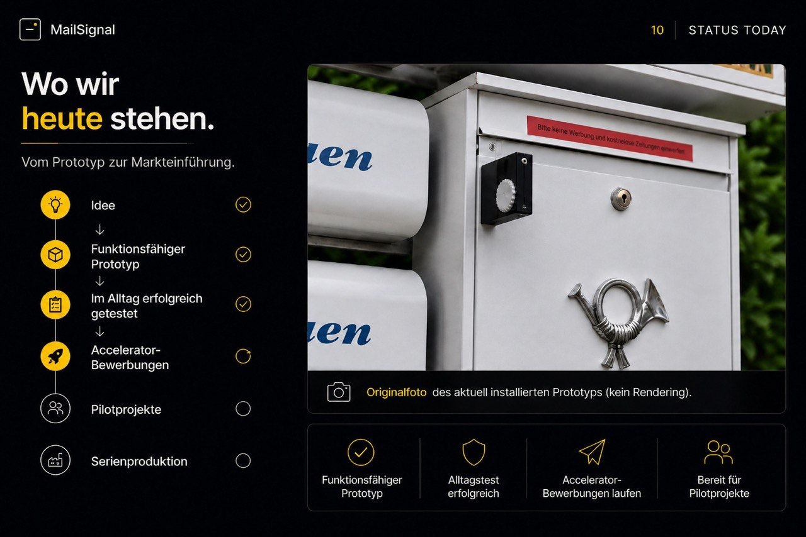
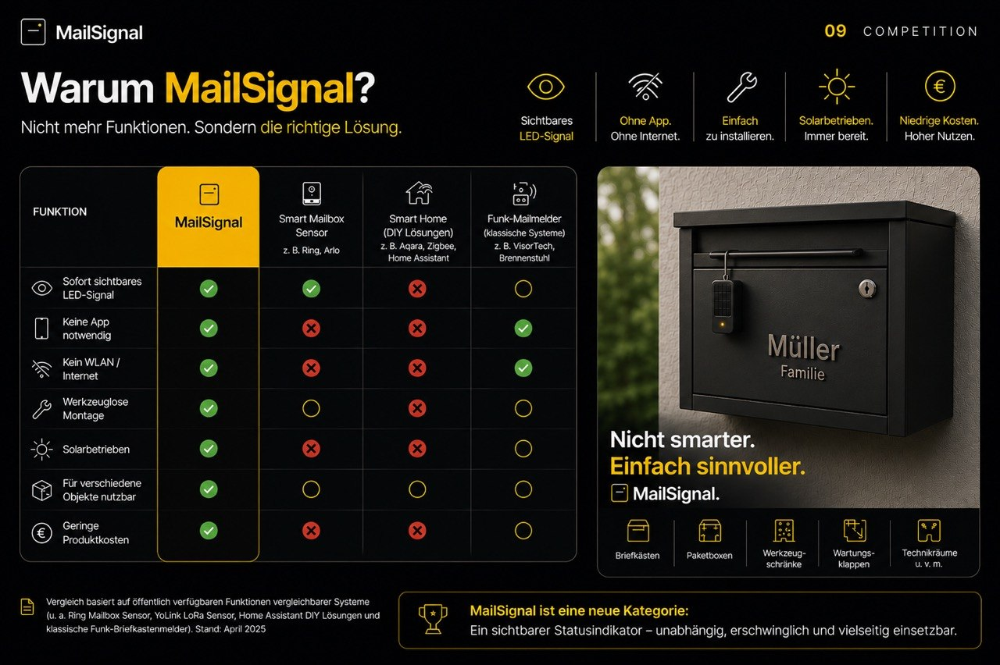

Unnötige Wege und unterbrochene Abläufe.
Entwickelt in Deutschland · Für Europa gebaut
Nie wieder umsonst zum Briefkasten.
MailSignal zeigt direkt am Briefkasten, ob seit der letzten Kontrolle Post eingeworfen wurde — sichtbar, offline und ohne App.
Keine AppKein WLANSolarbetriebenWerkzeuglos

Problem
Der tägliche Weg zum leeren Briefkasten.
Viele Menschen prüfen ihren Briefkasten täglich, ohne zu wissen, ob überhaupt Post angekommen ist. Das kostet Zeit, Wege und Aufmerksamkeit.
Der Briefkasten gibt von außen keinen Status zurück.
Relevante Briefe sollen trotzdem nicht verpasst werden.
Lösung
Ein kleines Gerät. Ein klar sichtbares Signal.

MailSignal wird außen am Briefkasten befestigt. Wird die Klappe bewegt, erkennt der Mechanismus die Zustellung und aktiviert eine sichtbare LED-Anzeige.
- Magnetische Befestigung ohne Bohren
- Solarbetrieb bei Tageslicht
- Kein Konto, keine Cloud, keine Verbindung
- Manueller Reset nach der Kontrolle
Funktion
So funktioniert MailSignal.
1Klappe öffnet
Einwurfklappe wird bei Zustellung bewegt.
2Sensor erkennt
Der einfache Mechanismus registriert die Bewegung.
3LED blinkt
Das Signal wird aktiviert und ist sichtbar.
4Status bleibt
Bis zur nächsten Kontrolle bleibt der Status erkennbar.
5Reset
Nach der Entnahme wird MailSignal manuell zurückgesetzt.
Komplexität statt Einfachheit?
Viele Smart-Lösungen setzen auf Apps, Netzwerke, Konten und Benachrichtigungen. MailSignal konzentriert sich auf das, was wirklich zählt: sichtbar erkennen, ob Post da ist.
| Typische Smart-Geräte | MailSignal |
|---|---|
| App erforderlich | Keine App |
| Wi-Fi / Bluetooth | 100% offline |
| Cloud / Konto | Kein Konto |
| Komplexe Einrichtung | In Sekunden montiert |
Zielkunden
Vom Privatkunden bis zur Hausverwaltung.
Privatkunden
Direktvertrieb online und im Handel.
Hausverwaltungen
Ausstattung von Wohnanlagen mit vielen Briefkästen.
Bauträger
Integration in Neubauprojekte und Serienausstattung.
Gewerbe
Statusindikator für weitere technische Einsatzorte.
Status heute
Prototyp, Design und Pitch-Deck-Material.




Kontakt
Bereit für Pilotprojekte.
MailSignal sucht erste Pilotkunden, Feedbackpartner und Kooperationsmöglichkeiten für Hausverwaltungen, Wohnungsbau und technische Anwendungen.